Website Tutorial
Overview
Platform Introduction
ImmunoFusion is an interactive web platform for exploring RNA-seq–derived gene fusions in cancer, with a focus on their associations with the tumor microenvironment (TME) and responses to immune checkpoint blockade (ICB). It integrates fusion calls from large treatment-naïve cohorts and multiple ICB cohorts, and links them to rich clinical and TME signatures.
The platform is designed to help you:
- Explore the pan-cancer landscape of RNA-derived gene fusions.
- Examine associations between fusions and TME, tumor-intrinsic, and metabolic signatures.
- Assess fusion co-occurrence/exclusivity and compare fusion-positive vs. fusion-negative groups.
- Investigate how specific fusions relate to survival outcomes in treatment-naïve and ICB-treated cohorts.
Please cite the ImmunoFusion paper if you use results from this platform in your work.
Data Overview
ImmunoFusion is the largest cancer fusion gene database, integrating 78 cohorts, 21,000+ samples, and 76,800+ high-confidence fusions, including data from TCGA, TARGET, CPTAC.
Core Data Metrics:
- Cohorts: 78 (28 IO / 50 non-IO)
- Samples: 21,000+ (4,600+ IO / 16,300+ non-IO)
- Fusions: 76,800+ (11,100+ IO / 66,000+ non-IO)
- Genes: 23,600+ (9,600+ IO / 22,400+ non-IO)
- Gene Pairs: 66,900+ (10,200+ IO / 57,800+ non-IO)
The Data Summary module provides macro-level statistical views of cohorts and samples, including cohort characteristics (cancer type distribution, IO vs non-IO composition, sex ratio, treatment type and response distribution) and fusion profiles (fusion type and sample type distributions). Users can quickly grasp the overall dataset composition through this module.
Citation and Disclaimer
This platform is for research purposes only. It does not collect personal information. Clinical use is at your own risk.
Data Modules
Fusion Module
The Fusion module is the entry point for inspecting individual fusion events and their basic characteristics.
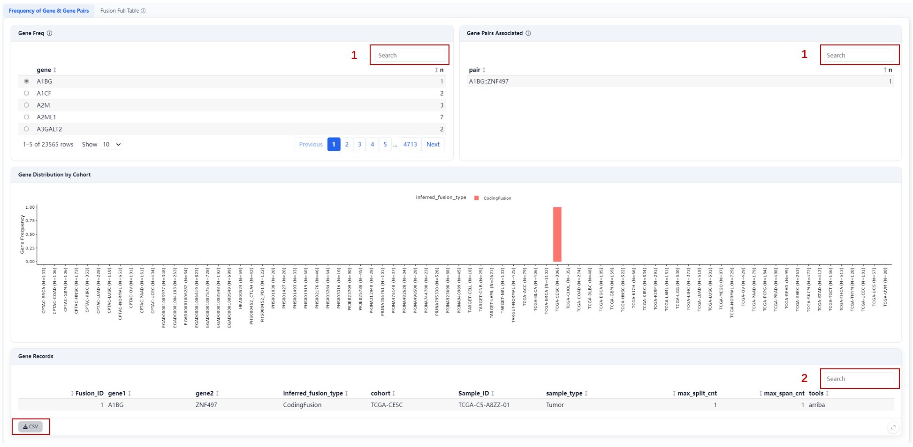
Steps:
- Select gene (optional) or gene pairs (optional);
- Filter by Gene, Sample_ID, Fusion_ID, etc.
Outputs:
- Browse specific fusions and view the distribution of different fusion types across the cohort in the middle panel;
- Download fusion summary tables as CSV files.
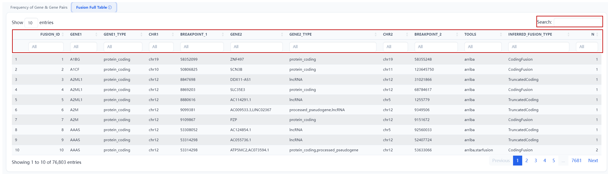
A searchable summary of all fusion events. Supports filtering by gene, fusion type, detection tool, etc.
Cohort Module
The Cohort module provides an overview of all cohorts and datasets in ImmunoFusion.
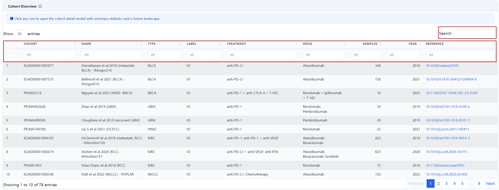
Displayed Fields: ID, name, cancer type, treatment/drug details, sample size, publication year/DOI, therapeutic label (e.g., IO), etc.
Operation: Search and filter the cohort list using the main search bar or individual column filters.
Cohort Details: Click any cohort row to open a detail modal with the following content:
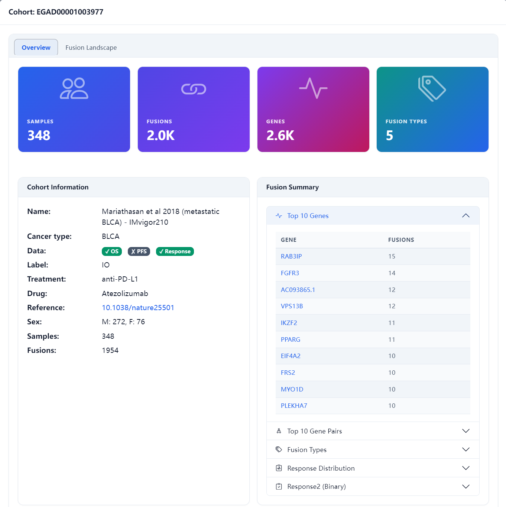
- Overview: sample size, total fusions, top fusion genes/gene pairs, fusion type distribution, and response distribution;
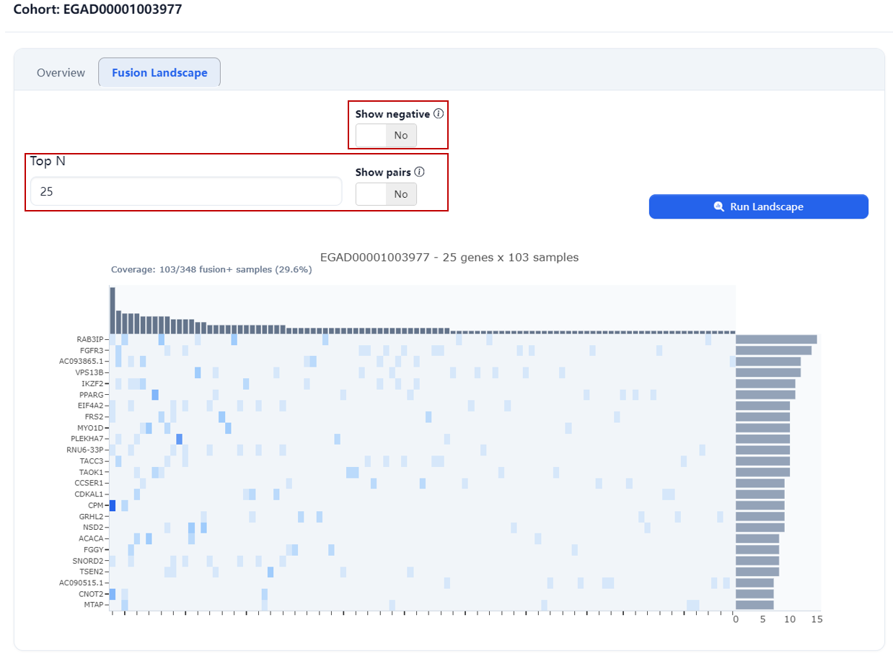
- Fusion Landscape: an OncoPrint of the cohort showing fusion event distribution across samples for the Top N genes.
Analysis Modules
The Analysis module consists of several sub-modules, all sharing a unified layout: Analysis controls on the left (cohorts, genes, endpoints, signatures) and Results on the right (interactive plots with export options).
Export Options: All analysis modules support chart exports (HTML) and data exports (CSV). Export buttons are located in the results panel of each module.
Global Filters: The global filters at the top of the page (fusion type, Score, tools, genes, fusions) apply to all analysis modules — a sample is considered Fusion+ only if it carries at least one fusion passing ALL active filters. Adjust filters to refine the Fusion+ vs. Fusion− grouping across all analyses.
Distribution
Evaluate the distribution characteristics of fusion genes across selected cohorts, generating fusion frequency plots, genome-wide breakpoint localization maps (Circos + Lollipop), and multi-dimensional composition charts. This module contains three sub-tabs: Frequency, Localization, and Composition.
Frequency
Display the frequency distribution of fusion genes/gene pairs across selected cohorts.
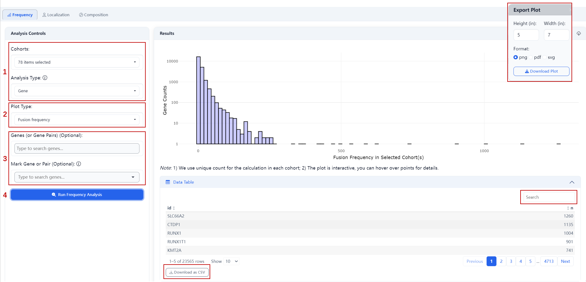
Steps:- Select one or multiple cohort IDs, analysis type (Gene / Gene Pair);
- Select plot type: Fusion Frequency or Sample Count;
- The Fusion Frequency plot displays the total number of fusion events involving each gene across all selected cohorts.
- The Sample Count plot displays the total number of unique samples carrying each gene fusion across all selected cohorts.
- Optional: specify target genes or gene pairs for highlighting;
- Click Run.
Outputs:
- Fusion Frequency Mode Bar plot: X-axis shows the total number of fusion events for each gene (multiple events in the same sample counted separately), Y-axis shows gene counts; data table includes gene names and their fusion counts.
- Sample Count Mode Bar plot: X-axis shows the number of samples carrying each gene fusion (multiple events in the same sample counted as 1), Y-axis shows gene counts; data table includes gene names and their fusion proportions (prop) across samples.
Localization
Display genome-wide distribution of fusion breakpoints. Includes two visualization views:
Ideogram
Show genome-wide fusion breakpoint density.
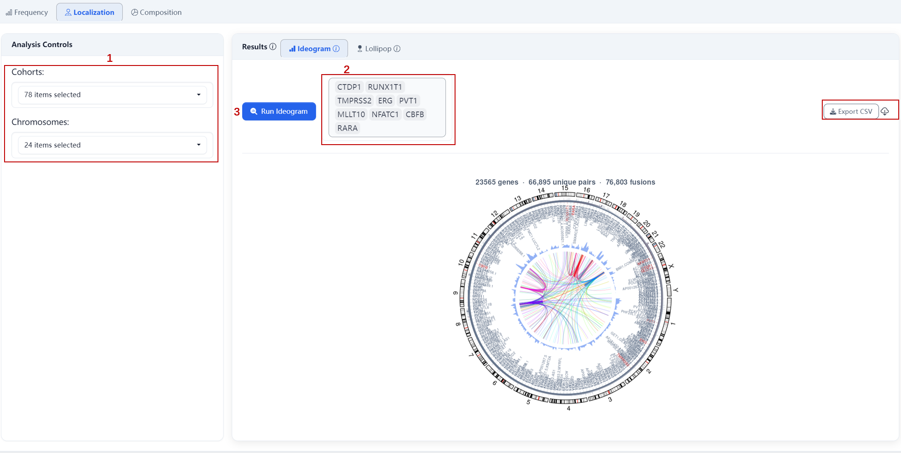
Steps:- Select cohorts (and optionally filter by chromosomes, all 24 by default);
- Optional: mark specific genes to overlay fusion partner links;
- Click Run.
Outputs:
- Circos plot: blue heatmap indicates breakpoint density; overlaid links show fusion partners for marked genes;
- Data source: filtered fusion calls aggregated by chromosome position.
Lollipop
ProteinPaint-style single-gene view showing fusion breakpoint distribution within a specific gene.
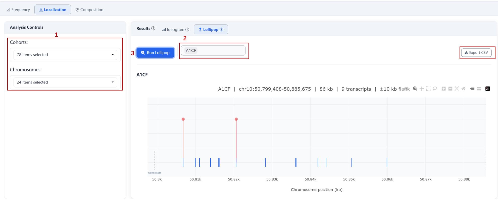
Steps:
- Select cohorts (and optionally filter by chromosomes, all 24 by default);
- Select target gene name;
- Click Run.
Outputs:
- Gene structure diagram: blue rectangles represent CDS/exons (HG38 BED-based);
- Red circles: intragenic fusion breakpoints; circle size scales with breakpoint count;
- Orange markers: regulatory/distal breakpoints (flanking ±10% gene length);
- Hover for breakpoint details.
Composition
Display the categorical breakdown of fusion events across multiple dimensions.
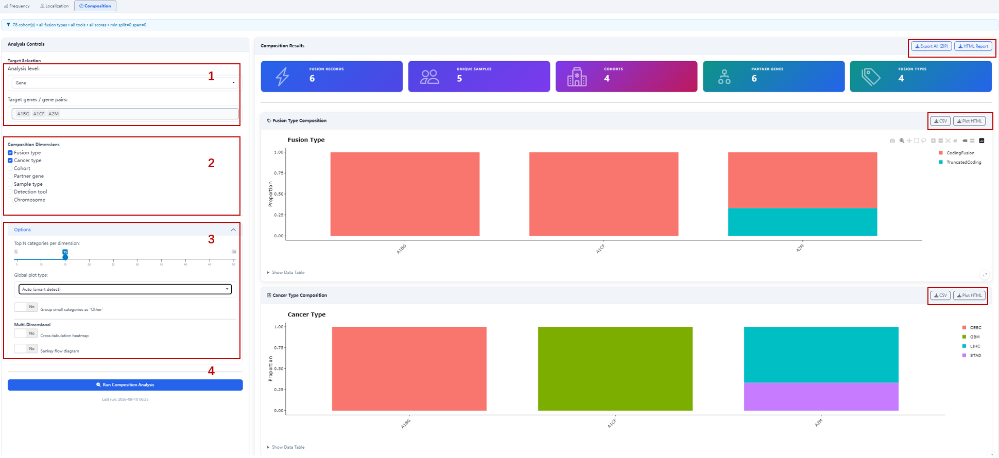
Steps:
- Select analysis level (Gene/ Gene Pair) and target genes/gene pairs (e.g., A1BG, A1CF, A2M);
- Select composition dimensions: Fusion Type, Cancer Type, Cohort, Partner Gene, Sample Type, Detection Tool, Chromosome (multiple selection allowed);
- Adjust optional parameters:
- Top N categories per dimension: number of categories displayed per dimension;
- Global plot type: Auto (smart detect) or group small categories as “Other”;
- Multi-Dimensional: enable cross-tabulation heatmap or Sankey flow diagram;
- Click Run Composition Analysis.
Outputs:
- Composition bar charts: show fusion event breakdowns across selected dimensions; each bar represents a target gene, with color-coded segments indicating the proportions of different feature categories (e.g., fusion types);
- Optional multi-dimensional views: cross-tabulation heatmap or Sankey flow diagram.
Comparison
Evaluate associations between fusion events and tumor microenvironment (TME) or IOBR immune signatures, generating box plots comparing feature scores between Fusion+ and Fusion− groups along with statistical test p-values.
This module offers two analysis modes:
- TME: compare cell-type abundance by fusion status;
- IOBR Signature: compare immune signature scores by fusion status.
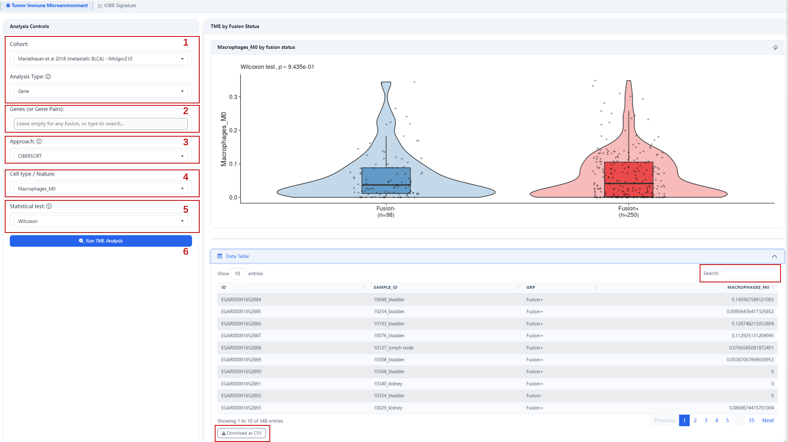
Steps:
- Select target cohort and analysis type (Gene / Gene Pair);
- Enter target gene/gene pair name(s) (leave empty to use all detected fusions);
- Select analysis approach
- Select cell type / feature (e.g., Macrophages_M0, APM);
- Select statistical test (e.g., Wilcoxon);
- Click Run.
Outputs:
- Box plot: displays feature abundance distribution between Fusion+ and Fusion− groups;
- Statistical results: Wilcoxon test p-value indicating significance between groups;
- Data table: includes sample ID, group label, and feature values; supports search and pagination.
Association
Explore associations between gene fusions and molecular features, clinical response, and pairwise gene-gene relationships. This module contains three sub-tabs: Correlation, Response, and Gene Interactions.
Correlation
Evaluate the correlation between fusion count and TME/signature features.
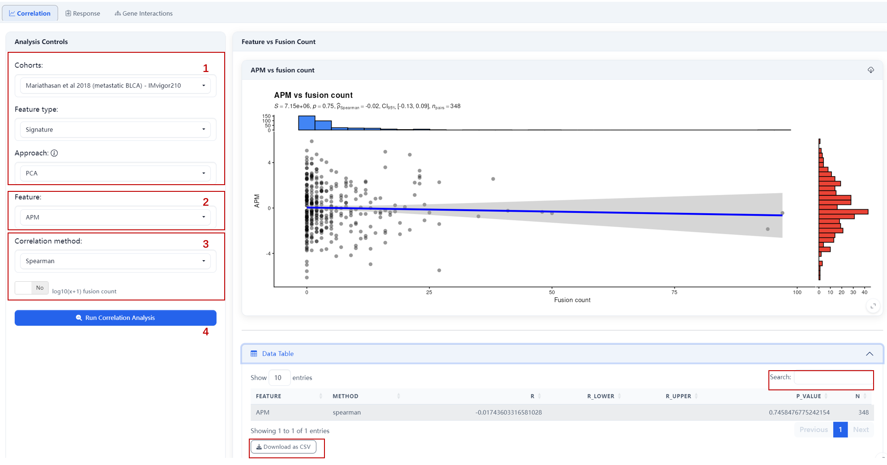
Steps:- Select target cohort, feature type (Signature/ TME), analysis approach (e.g., PCA);
- Select specific feature (e.g., APM);
- Select correlation method (e.g., Spearman) and choose whether to apply log10(x+1) transformation to fusion count;
- Click Run Correlation Analysis.
Outputs:
- Scatter plot: shows relationship between feature scores and fusion count with fitted trend line;
- Statistics: Spearman correlation coefficient (ρ), 95% CI, and p-value.
Response
Evaluate associations between fusion status and clinical response (binary + RECIST).
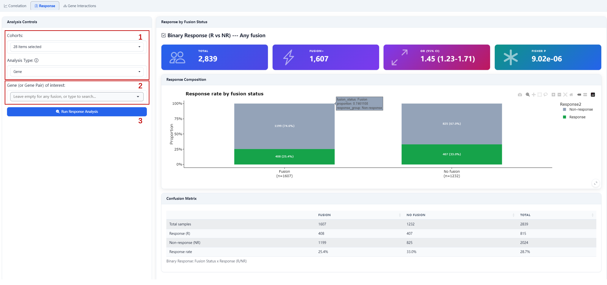
Steps:
- Select one or multiple cohorts and analysis type (Gene/ Gene Pair);
- Enter target gene/gene pair(s) (leave empty to use any fusion as Fusion+);
- Click Run Response Analysis.
Outputs:
- Response rate bar plot: compares response rates between Fusion+ and Fusion− groups;
- Confusion matrix: shows distribution of response by fusion status;
- Statistics: odds ratio (OR) with 95% CI and Fisher’s exact test p-value.
Gene Interactions
Detect co-occurrence or mutual exclusivity between gene fusion events.
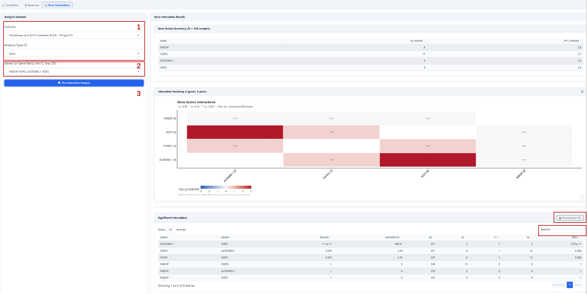
Steps:- Select target cohort and analysis type (Gene/ Gene Pair);
- Enter target genes/gene pairs (min 2, max 25);
- Click Run Interaction Analysis.
Outputs:
- Co-occurrence/mutual exclusivity heatmap: shows association patterns between gene pairs;
- Statistics: p-values and odds ratios (OR) for each gene pair.
Survival (KM)
Evaluate the association between gene fusion status and patient survival by generating and comparing Kaplan-Meier survival curves between Fusion+ and Fusion− groups.
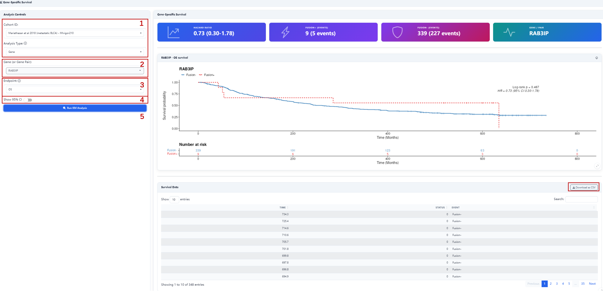
Steps:- Select target cohort and analysis type (Gene / Gene Pair);
- Enter target gene/gene pair name (defines Fusion+ vs Fusion− grouping);
- Select survival endpoint (e.g., OS);
- Optional: check Show 95% CI to display confidence intervals;
- Click Run KM Analysis.
Outputs:
- KM survival curves: show survival probability over time for both groups;
- Log-rank test p-value: indicates whether survival curves differ significantly;
- Hazard ratio (HR) with 95% confidence interval;
- Survival data table: includes time and event status; supports search and pagination.
Cox Regression
Evaluate the independent prognostic value of gene fusions using multivariable Cox proportional hazards regression, with optional adjustment for clinical covariates.
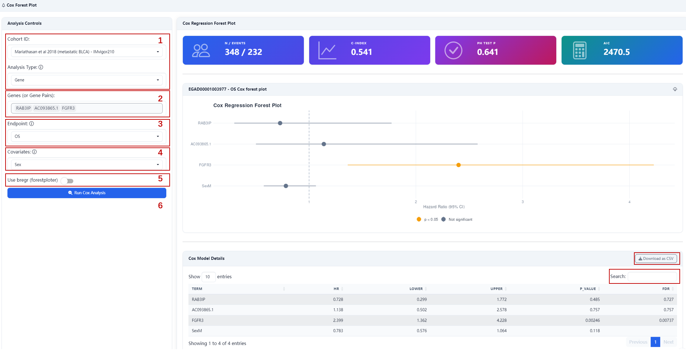
Steps:- Select target cohort and analysis type (Gene / Gene Pair);
- Select target gene/gene pair names (multiple allowed);
- Select survival endpoint (e.g., OS);
- Select clinical covariates (e.g., Sex);
- Optional: check Use breg (forestplotter) to enable the dedicated forest plot rendering engine.
- Click Run Cox Analysis.
Outputs:
- Forest plot: displays hazard ratios (HR) and 95% CI for each fusion gene and covariate;
- Model summary statistics:
- C-index: model discriminative ability (0.5 = random, >0.7 = acceptable);
- PH test p: proportional hazards assumption test (>0.05 indicates assumption holds);
- AIC: model fit quality indicator;
- Detailed results table: includes HR, 95% CI, p-values, and FDR-adjusted values for each variable.
Landscape
Visualize the fusion landscape within a single cohort as an OncoPrint. Each column represents a sample; each row represents a gene or gene pair. Colored rectangles indicate detected fusion types.
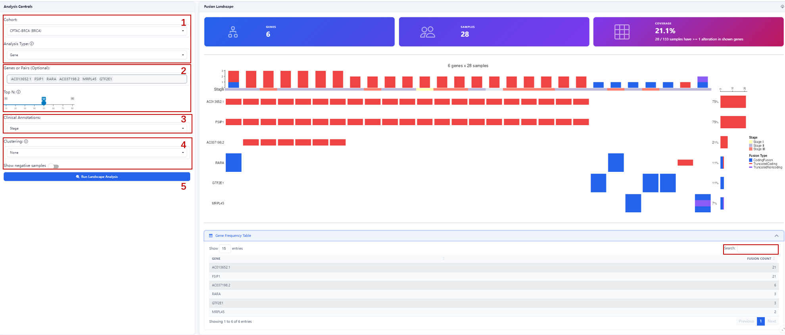
Steps:
- Select target cohort and analysis type (Gene / Gene Pair);
- Enter target gene/gene pair names (optional), or set Top N to display the top fusion-frequency genes (leave empty for auto-detection).
- Select clinical annotation covariates (e.g., Stage) for sample-level annotation bars;
- Optionally select a clustering method (None / Samples only / Genes only / Both axes) and toggle whether to include samples without fusions (Show negative samples).
- Click Run Landscape Analysis.
Outputs:
- OncoPrint main plot: shows fusion event distribution for each gene across samples;
- Top annotation bars: display selected clinical covariates (e.g., Stage);
- Side bar: shows fusion frequency per gene;
- Bottom bar: shows total alterations per sample;
- Gene frequency table: lists fusion counts for each gene; supports search and pagination.